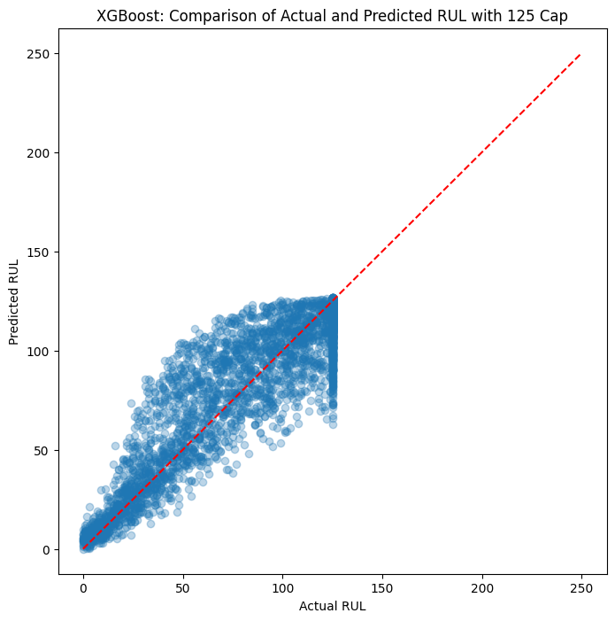
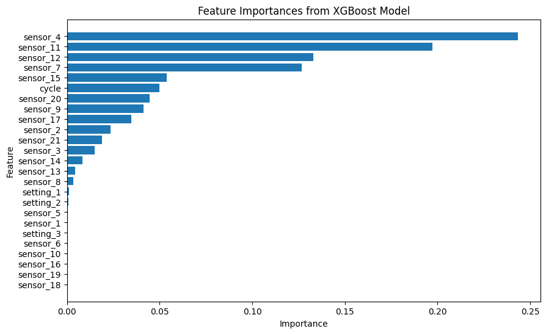
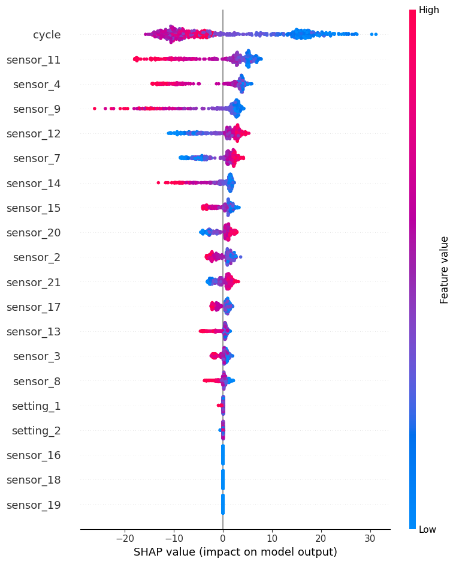

MACHINE LEARNING
NASA Engine Remaining Life Prediction
A Python machine-learning pipeline predicting turbofan remaining useful life using NASA C-MAPSS data.
Results & model interpretation
Feature engineering, model evaluation, and SHAP analysis were used to understand the XGBoost model’s predictions.


